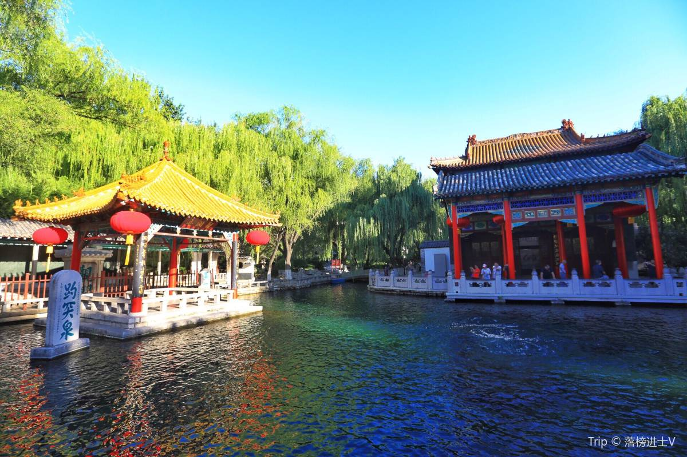
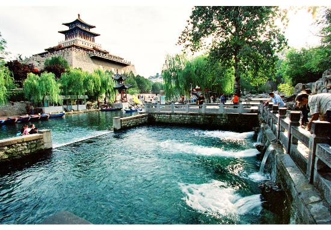

Jinan Travel Blog: Discover the "City of Springs" in Eastern China


Jinan, the capital of Shandong Province, is a city where water and history flow together seamlessly. Known as the "City of Springs," it’s home to over 72 natural springs—clear, gurgling waters that have shaped its landscape and culture for thousands of years. My 4-day trip here was a refreshing escape: I spent mornings watching carp swim in spring-fed lakes, afternoons wandering ancient temples nestled among willow trees, and evenings savoring hearty Shandong cuisine by the water.
What makes Jinan special is its quiet charm. Unlike bustling metropolises, it moves at a slower pace—locals gather by springs to play chess, drink tea, or chat, and every corner feels like a scene from a traditional Chinese painting. The highlight was undoubtedly the springs: from the iconic Baotu Spring (where water bursts up like a lotus flower) to the tranquil Black Tiger Spring (where visitors fill bottles with fresh spring water), each one had its own personality. I also fell in love with Daming Lake, a spring-fed lake surrounded by pavilions and willows—taking a boat ride at sunset, with the sky turning pink over the water, was one of the most peaceful moments of my trip.
Whether you’re a nature lover, a history buff, or a foodie, Jinan has something to offer. Below, I’ll share my favorite spots, essential travel tips, and detailed guides to the three scenic spots, three historic sites, and three must-try foods that made my trip unforgettable.

Travel Tips for Jinan
Best Time to Visit:
Tip 1: Spring (March–May): Temperatures range from 10°C–20°C, willow trees bud, and springs are at their fullest (rainfall replenishes groundwater).
Tip 2: Autumn (September–November): Cool (12°C–25°C), clear skies, and fewer crowds—ideal for exploring springs and lakes.
Tip 3: Avoid Summer (June–August): Hot (28°C–35°C) and humid, with occasional heavy rain; winter (December–February) is cold (0°C–8°C) but quiet, great for temple visits.
Transportation:
Tip 1: Getting to Jinan:
Fly to Jinan Yaoqiang International Airport (40 minutes to city center by airport bus Line 3, 20 CNY; or taxi ~100 CNY). High-speed trains from Beijing (1.5 hours, ~180 CNY) or Shanghai (3.5 hours, ~300 CNY) are convenient.
Tip 2: Getting Around:
Metro: Subway Lines 1, 2, and 3 cover major attractions (single ride 2–5 CNY)
Buses: buses (2 CNY) reach springs and lakes
Bikes: shared bikes (2 CNY/30 minutes) are great for short trips around Daming Lake.
Essential Tips:
Tip 1: Bring a Reusable Bottle: At Black Tiger Spring, you can fill up on fresh spring water for free—locals swear by its clean, sweet taste.
Tip 2: Wear Comfortable Shoes: Many attractions (like Baotu Spring Park and Daming Lake) have stone paths and require lots of walking.
Tip 3: Try Local Tea: Jinan’s spring water is perfect for brewing tea—ask for "Laiyang Green Tea" at teahouses near springs for a authentic experience.